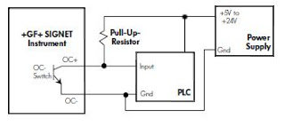

Signal output indicator with saw sharpenning machine
Video: Example of automation using signal output indicator (543-350B) with saw sharpenning machine and PLC.
Tooth tolerance (0,07 mm) is saved directly in the indicator. A logical output signal OK/NOK is processed by PLC only after the saw-belt had moved (look for LED colour change to green/red). If the tooth-curve is out of tolerance, the buzzer sounds. Depending on the switch setting on the operator panel the next movement is stopped (video time upto 0:34) or there is only buzzer signalization used without stopping the movement.
For controll of all processes is simply and cheap PLC from SEA Praha used.
Tolerance pro vyhnutí zubu (0,07 mm) jsou uloženy přímo v úchylkoměru. Logický výstupní signál OK/mimo toleranci je pomocí PLC vyhodnocován jen v okamažiku zastavení pohybu pásu, tedy v okamžiku, kdy je zub měřen dotekem úchylkoměru (všimněte si změny zbarvení indikační LED zelená/červená). Je-li zub mimo toleranci (příliš vyhnutý), dojde k signalizaci houkačkou. Dle nastavení přepínače na panelu se zároveň zastaví i posun pásu na další zub (začátek videa do času 0:34) nebo je prováděna jen akustická signalizace bez zastavení.
K řízení celého procesu je použito jednoduché a levné PLC od SEA Praha.

Note: for PLC connection may be important to use pull-up resistors because the open collector is used on the indicator output. These resistors define correct H-level on PLC inputs.
Upozornění: pro připojení PLC může být nutné použití pull-up odporů, neboť na straně měřidla jsou použity výstupy s otevřeným kolektorem. Pomocí těchto odporů je zajištěna správná úroveň H na vstupech PLC.
Poznámka:
Způsob upevnění úchylkoměru není v tomto případě zcela ideální. Stavěcí šroub směřující přímo do pouzdra vřetene může pouzdro promáčknout a tím dojde k omezení pohyblivosti měřícího vřetene. Správný způsob uchycení je svěrnou dělenou objímkou.